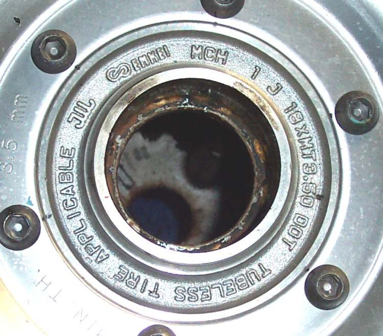
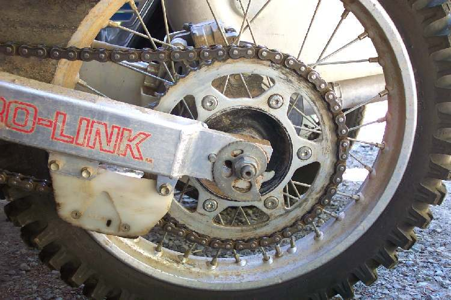

When you pull the back of the swingarm left and right, it moves at the pivot where it joins the frame. On the road the rear may feel loose or the bike may weave, the chain may wear unevenly and rub on its guide, and there may be a clunk over bumps. The usual cause is worn pivot bushes (sleeves) or a loose pivot nut. On many small bikes the pivot runs in plain bushes that need grease; when they run dry in mud and water they wear quickly.
Is it safe to ride?
No. A loose swingarm lets the rear wheel steer the bike.
Quick checks first
- Put the bike on its centre stand. Hold the rear of the swingarm (not the wheel) and pull left and right.
- Have a helper feel the joint between swingarm and frame.
- Check the pivot nut is tight.
- Spin the rear wheel: does it rock on its axle (wheel bearings)?
Diagnose it step by step
1Does the movement happen at the wheel hub rather than the pivot?
- Yes: it is the wheel bearings. Check wheel bearings.
- No, it is at the pivot: go to step 2.
2Is the pivot nut loose?
- Yes: tighten it to the model torque and recheck. No value is given here because the K-Light 125 manual lists two different pivot nut torques. If play stays, go to step 3.
- No: go to step 3.
3With the nut tight, is there still play at the pivot?
- Yes: the bushes or pivot shaft are worn. The swingarm must come out. Follow Check the swingarm pivot. The pivot shaft is checked for bend (K-Light 125 limit: 0.2 mm runout) and never straightened; bushes are pressed out and new ones in. Workshop unless you have a press.
- No: go to step 4.
4Do the shock mounts move?
- Yes: worn shock bushes or loose bolts. Check the rear shock absorbers.
- No: go to step 5.
5Is the chain slider worn on one side, or are the chain adjusters uneven?
- Yes: realign with Check and adjust chain slack, and replace the slider.
- No: if the bike has been crashed, have the swingarm and frame checked: Inspect the frame after a crash.
Causes, most likely first
| Cause | How to confirm | Fix |
|---|---|---|
| Loose pivot nut | Play goes when nut tightened | Tighten to model torque |
| Worn pivot bushes | Play with nut tight | Check the swingarm pivot, new bushes |
| Worn wheel bearings | Wheel rocks on axle | Check wheel bearings |
| Worn shock bushes | Movement at shock eyes | Check the rear shock absorbers |
| Bent pivot shaft or swingarm | Runout over limit; after crash | Replace part |
Reference values (K-Light 125)
| Item | Value | Source |
|---|---|---|
| Swingarm pivot shaft runout limit | 0.2 mm (never straighten) | K-Light 125 manual, PDF p. 171 |